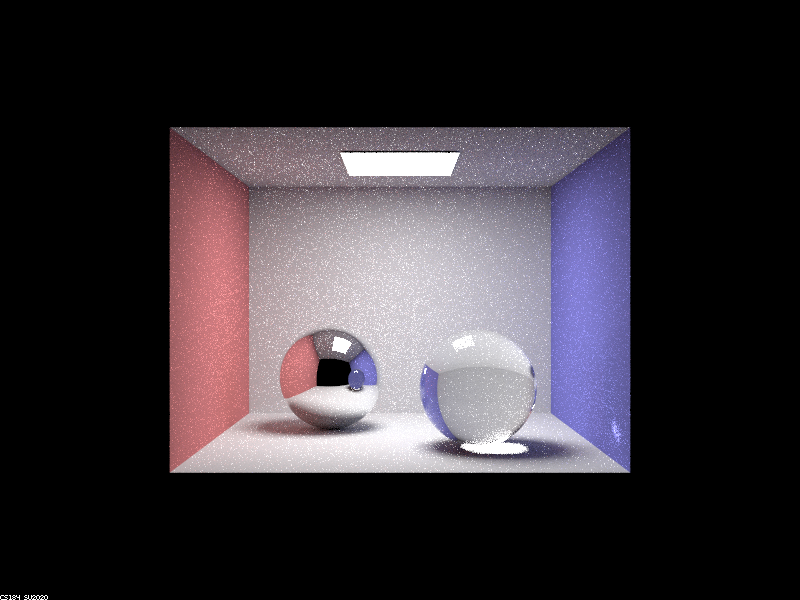
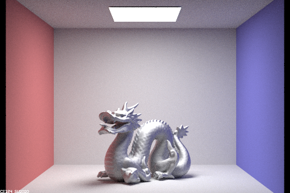

Overview
We chose part 1 and part 2 of the project, where we were able to render realistic Mirror and Glass Materials and Microfacet Materials.
Part 1. Mirror and Glass Materials
Show a sequence of six images of scene CBspheres.dae rendered with max_ray_depth set to 0, 1, 2, 3, 4, 5, and 100. The other settings should be at least 64 samples per pixel and 4 samples per light. Make sure to include all screenshots.
The images below were rendered with parameters:-s 64 -l 4 -m [0 1 2 3 4 5 100] .

|
|
|
|
|
|

|
|
|
|
Point out the new multibounce effects that appear in each image.
- When max_ray_depth = 0, the resulting image is just a complete black scene (with the single light source). We only know that it is a box room with a light source on the top.
- When max_ray_depth = 1, we see more details of the scene – there are two black spheres in the scene, and the room gradually lights up. We also observe that the light patch is more spotty for the right sphere.
- When max_ray_depth = 2, we see the room is slightly brighter, and the sphere at the left become a bit more colored and reflective (start to see surroundings' reflections onto the left ball), while the sphere on the right is more blackish, but starting to become “clear”.
- When max_ray_depth = 3, we now see a more transparent sphere – the material properties of the glass start to appear. We also see the shadows “lighting up” for the right sphere. However, the reflection of the right sphere on the left sphere is still pretty dark.
- When max_ray_depth = 4 and 5 (similar), the reflection of the right sphere onto the left sphere becomes transparent, and we also see light bouncing to the bottom right corner of the room.
- When max_ray_depth = 100, it produces almost the same result as max_ray_depth = 5. The ceiling look slightly brighter.
Explain how these bounce numbers relate to the particular effects that appear. Make sure to include all screenshots.
- When max_ray_depth = 0, we only get zero-bounce illumination, and so we can only observe the direct light source that emits the light.
- When max_ray_depth = 1, the light propagated in the room. It struck the walls, and the two spheres. The right sphere is also refractive, and so some rays enter the sphere and that's why the light patch is more spotty than the only reflective sphere on the left which isn't spotty. (source: Ed)
- When max_ray_depth = 2, the walls are brighter because light from source->one wall->another wall->camera, more lights are bouncing on the walls. The left ball becomes reflective of the walls (source->wall->left ball->camera) and of the right ball (source->right-> left ball->camera). Similar things happen for the right ball, but since it is also refractive, it looks much darker.
- When max_ray_dapth = 3, we observe the highlighted “shadows” because light → top surface of sphere → bottom surface of sphere → floor → camera (three bounces) gives us the effect. We also start to see more transparency, because light that’s refracted gets out of the sphere with three bounces.
- When max_ray_depth = 4, the light goes from the source-> left sphere -> left surface of right sphere → right surface of right sphere (refracted through) -> wall -> camera, creating the highlights on the right corner of the wall. With more bounces, the light bouncing to the right ball can also be bounced back to the left ball, so that the reflection of the right ball onto the left ball becomes transparent (light up). max_ray_depth = 5 has results similar to max_ray_depth = 4.
- When max_ray_depth = 100, it is slightly brighter, because with more bounces, the light can bounce back to the ceiling.
Part 2. Microfacet Material
Show a screenshot sequence of 4 images of scene CBdragon_microfacet_au.dae rendered with $\alpha$ set to 0.005, 0.05, 0.25 and 0.5. The other settings should be at least 128 samples per pixel and 1 samples per light. The number of bounces should be at least 5. Describe the differences between different images. Note that, to change the $\alpha$, just open the .dae file and search for "microfacet."
The images below were rendered with parameters: -s 128 -l 1 -m 5.
|
|
|
|
|

|
As $\alpha$ increases, the dragon's surface becomes less reflective. At $\alpha = 0.005$, the dragon reflects almost completely and its color is influenced by the wall. This means that the surface appears red towards the red wall and blue towards the blue wall, on top of its original golden color. Unfortunately, this scene contains a lot of noise. The noise becomes even worse when $\alpha = 0.05$ as the dragon reflects fewer rays from the walls and more from the light source. At $\alpha = 0.25$, the walls are still visible on the neck and back of the dragon, but most of the reflection comes from the light source. At $\alpha = 0.5$, the surface becomes nearly all about diffusion, resulting in a bright surface with little noise that clearly showcases the dragon's original golden (Au) color. So for a small $\alpha$, the dragon is smooth and glossy; whereas for a large $\alpha$, the dragon is diffuse and rough.
Show two images of scene CBbunny_microfacet_cu.dae rendered using cosine hemisphere sampling (default) and your importance sampling. The sampling rate should be fixed at 64 samples per pixel and 1 samples per light. The number of bounces should be at least 5. Briefly discuss their difference.
The images below were rendered with parameters: -s 128 -l 1 -m 5.
|
|
|
Cosine hemisphere sampling produces a lot more noise compared to importance sampling, which samples towards the light source. The cosine hemisphere sampled bunny has many black spots, especially around the edges, while the importance sampled bunny looks more realistic and has almost no noise on itself. Instead, the noise is concentrated in the rest of the scene. This is because the bunny's alpha value is set to $0.1$, similar to the dragon with $\alpha = 0.05$. This means that it reflects more rays from the light source and fewer from the wall, resulting in the production of noise.
Show at least one image with some other conductor material, replacing eta and k. Note that you should look up values for real data rather than modifying them arbitrarily. Tell us what kind of material your parameters correspond to.
The image below was rendered with parameters: -s 128 -l 4 -m 5.
|

|
We set eta to $[3.1743, 3.1800, 2.4650]$.
We set k to $[3.3000, 3.3300, 3.2150]$.
These specific values allowed us to output a chromium material on our dragon.